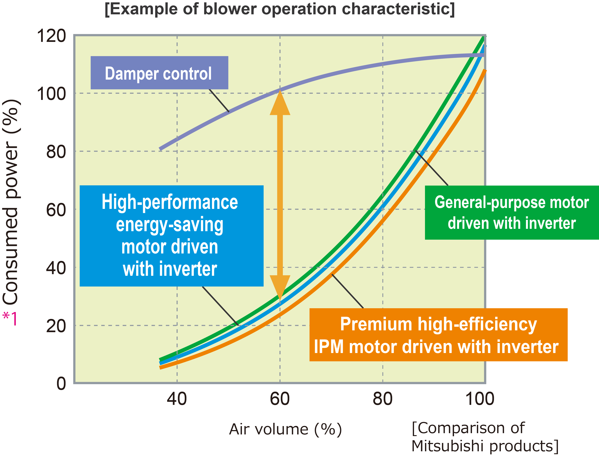
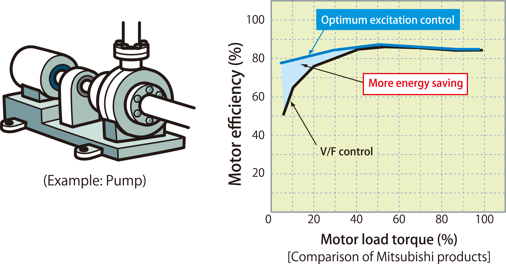
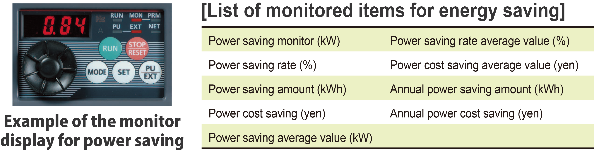
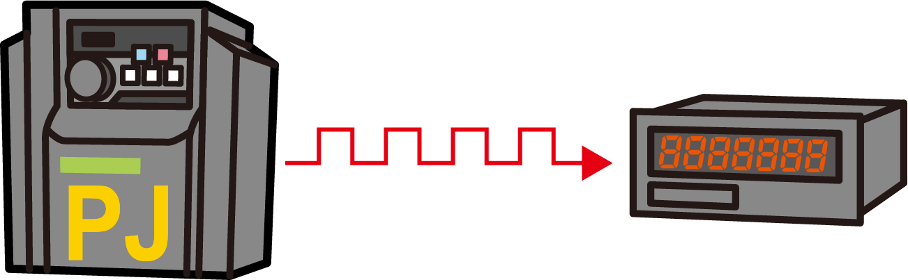

Inverters-FREQROL-F Series -FREQROL-F700PJ- Kontrol Inverter untuk Penghematan Energi

Hemat energi dengan kontrol kecepatan
- Daya yang dikonsumsi oleh beban torsi variabel, seperti kipas, pompa, dan blower, sebanding dengan pangkat tiga kecepatan putarannya.
Ini berarti bahwa mengendalikan kecepatan putaran untuk menyesuaikan volume udara dapat menghasilkan penghematan energi.

*1Output motor yang dinilai adalah 100%.

Penghematan energi dengan kontrol eksitasi yang optimal (Motor serbaguna)
Kontrol eksitasi yang optimal menghasilkan efisiensi motor tertinggi.
Penghematan energi lebih lanjut dapat dicapai untuk aplikasi seperti kipas dan pompa dengan torsi beban variabel.

Periksa efek penghematan energi secara sekilas
- Tersedia monitor penghematan energi. Efek penghematan energi dapat diperiksa menggunakan panel operasi, terminal keluaran (terminal FM), atau jaringan.

- Jumlah daya keluaran yang diukur oleh inverter dapat dikeluarkan dalam bentuk pulsa. Jumlah daya kumulatif dapat diperiksa dengan mudah.*4
*4Fungsi ini tidak dapat digunakan sebagai meteran untuk mengesahkan tagihan.
